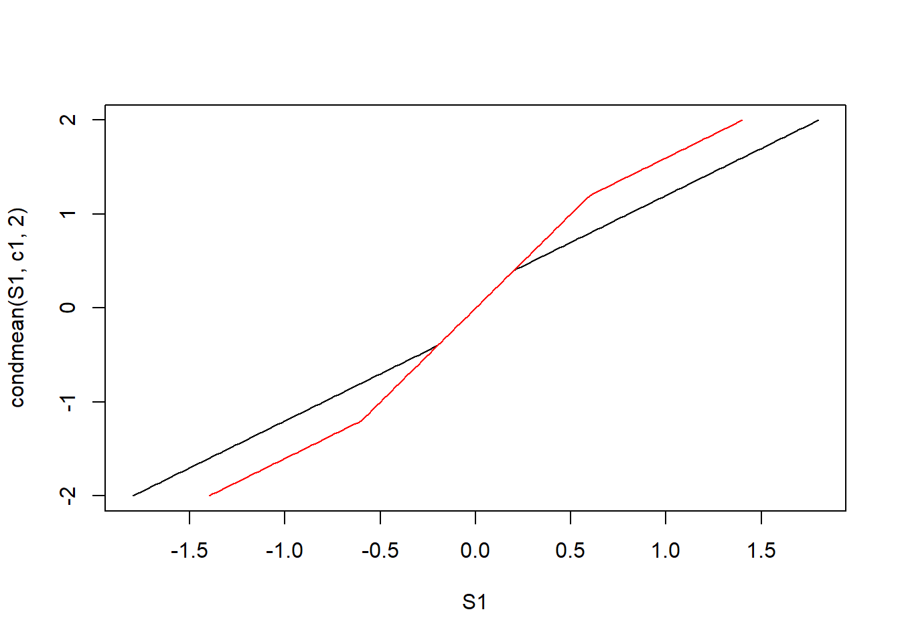
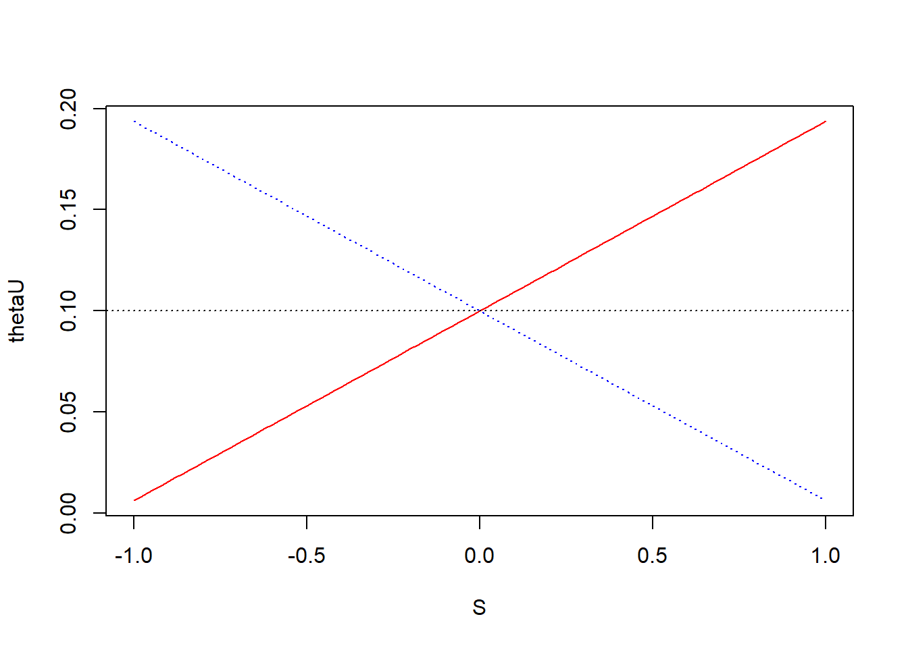
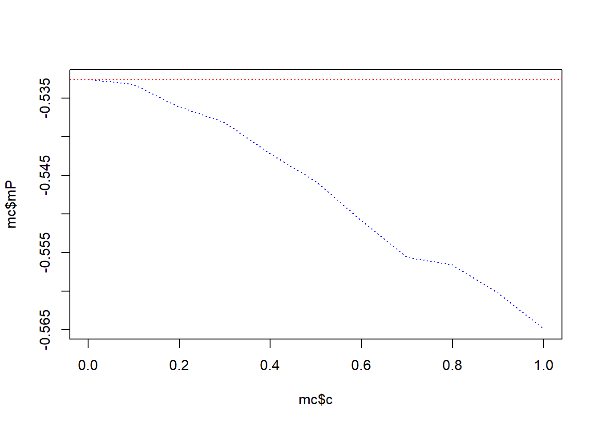
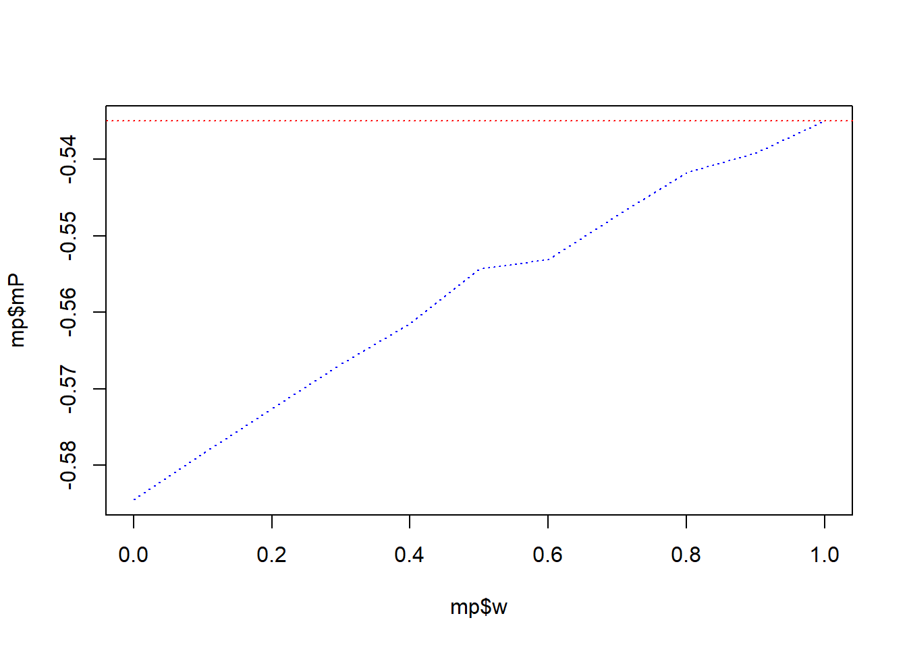
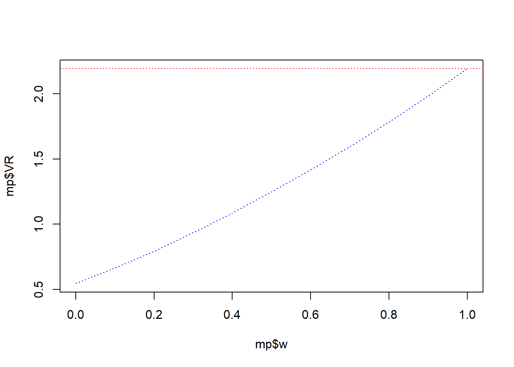
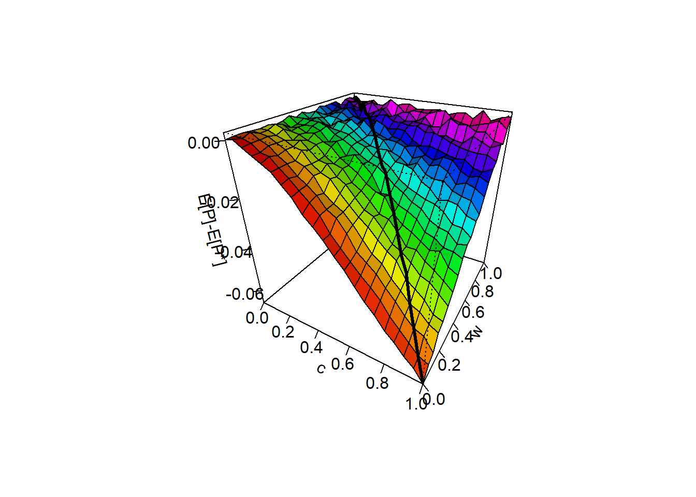
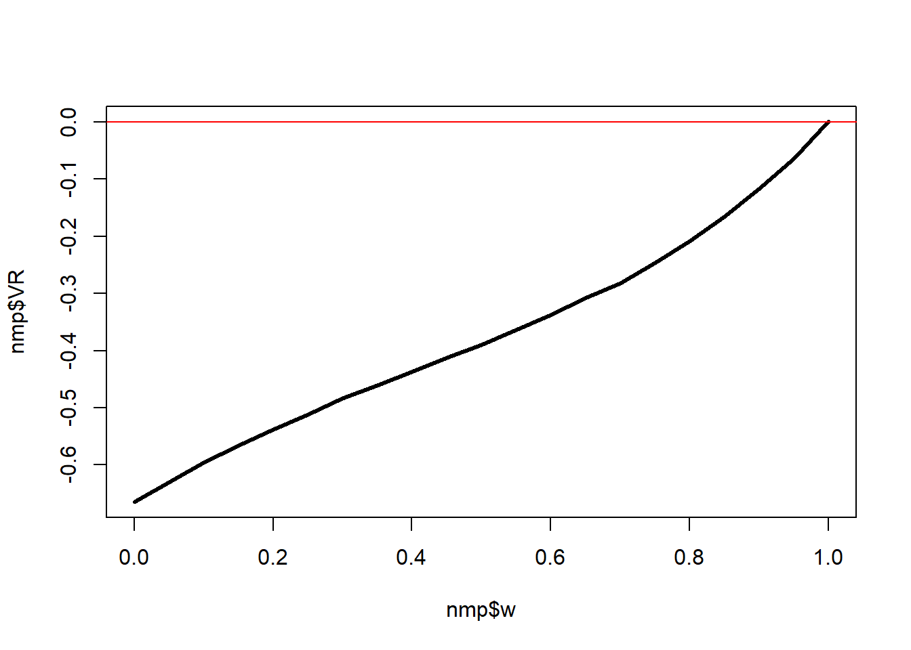
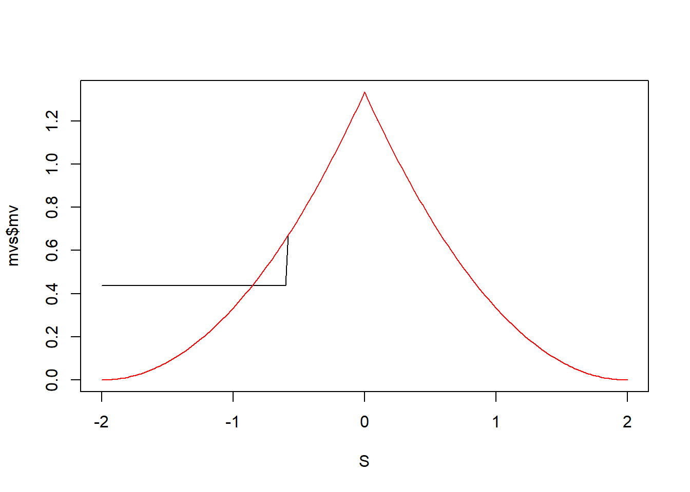

ETF持股影响股票定价效率的理论模型推导
2021-01-14
机理分析
定价效率是证券价格反映信息的能力，表现在股价反映信息的速度和准确性上（Saffi and Sigurdsson，2011）。关于证券市场信息与定价效率的关系在理论界已做出了充分的研究，提出了有效市场理论、金融市场噪声理论和交易摩擦理论等。目前，学术界普遍认为，ETF主要通过交易成本和限制等市场摩擦影响成分股的定价效率。与发达市场不同，A股市场各项制度和规则不够完善，交易成本较高，卖空限制严重，散户投资者持有市场88%的流通股（Liu et al.，2019），这都会影响定价效率。而且，高效价格发现机制的形成，离不开发达的信息中介机构和相对成熟的投资者群体（朱红军等，2008），中介机构的信息生产和挖掘能力也是影响定价效率的重要因素。因此，我们认为交易成本、卖空限制和信息挖掘三种是ETF影响定价效率的中介渠道。
模型建立
我们的模型尝试捕获证券市场的四个主要特征：（1）投资者异质性，（2）交易成本非零，（3）卖空存在限制，（4）知情投资者主动挖掘市场信息。投资者异质性体现在投资者的风险承担和关于未来资产回报信息上的差异，他们出于承担风险和信息投机的目的而交易。
证券市场
市场持续存在两期，分别为0期与1期，投资者在竞争的证券市场上交易，可交易的产品有无风险债券、股票和ETF基金，在1期，投资者获得投资收益，同时，投资者面临的流动性成本为\(cv\varepsilon\)。假定每单位债券的固定收益为1，股票价值为\(V=F+\mu\)。
投资者
市场上有两类投资者，一类为知情投资者，另一类为非知情投资者，每一类投资者完全相同，而且知情投资者与非知情投资者面临的信息不同，知情交易者掌握其投资资产的所有信息，非知情交易者通过资产价格来推断该资产价值相关的信息，假设一个投资者为知情交易者的概率为\(w\)，则为非知情交易者的概率为\(1-w\)。
禀赋
每位投资者\(i（i=I,U）\)初始的债券禀赋为零，\(\bar\theta\)单位的股票资产，投资者通过选择1期持股有的股票量\(\theta_i\)来最大化期望效用
信息结构
在0期，知情投资者观察到私有信息\(F\)，所有投资者都能观察到股票的市场价格\(P\)，这样知情投资者的信息集为\(I_I=\{F,P\}\)，非知情交易者的信息集为\(I_U=\{P\}\)，在1期所有不确定性都被消除。
财富及效用函数
每一位投资者都是风险厌恶者，其对效用函数为Markowiz-Tobin均值方差函数，让\(\theta_i\)表示投资者\(i\)最有持股，\(w_i\)为投资者\(i\)在1期的最终财富，具体公式如下：
\[W_i=\bar\theta P+\theta_i(V-P)-cv\varepsilon\]
投资者效用函数为：
\[E[W_i|I_i]-\frac{1}{2}Var[W_i|I_i]\]
经济环境中随机变量分布假定
为了简化计算，我们给定经济冲击相关随机变量的分布，假设\(F\)、\(\mu\)、\(v\)、\(\varepsilon\)为均匀分布，且\(F\)、\(\mu\)、\(\varepsilon\)相互独立，\(v\)与\(\mu\)的协方差为\(\sigma_{vu}\),与其他随机变量独立，不损失一般性，\(F\sim U[-a_F,a_F]\)，\(\mu\sim U[-a_\mu,a_\mu]\),\(v\sim U[-a_v,a_v]\)，\(\varepsilon\sim U[-a_\varepsilon,a_\varepsilon]\)，并且\(F\)、\(\mu\)、\(\varepsilon\)的方差分别为，\(\sigma_F^2\)、\(\sigma_u^2\)、\(\sigma_v^2\)和\(\sigma_{\varepsilon}^2\)。为了保证价格函数的单调性，我们需要对参数做出以下限制：
\[\sigma_u\ge \sigma_F\ge \sigma_{v\varepsilon}\sigma_{\varepsilon}\]
ETF持股作为外生冲击，通过交易成本、卖空限制，信息挖掘三种渠道来影响投资的决策行为。交易成本主要影响投资者从股票价格获取信息的准确性，卖空限制影响投资者对资产的需求，信息挖掘影响投资者成为知情投资的概率，ETF持股比例越高，股票交易成本越低，卖空限制越小，信息挖掘越充分，投资者成为知情交易者的概率越高，从股票价格中获取的信息越准确。假设ETF持有股票i的市值比例为\(\eta\)，则投资者成为知情交易者的概率\(w\)是ETF持股比例的增函数，卖空限制和交易成本是ETF持股比例的减函数。
模型求解
投资者最大化期望效用，具体如下：
\[Max \hspace{0.4cm} E[W_i|I_i]-\frac{1}{2}Var[W_i|I_i] \hspace{0.4cm}i=I,U \\ s.t \hspace{0.4cm} W_i=\bar\theta P+\theta_i(V-P)-cv\varepsilon\]
由于\(E[W_i|I_i]=\bar\theta P+\theta_i(E[F|I_i]-P)\),\(Var[W_i|I_i]=\theta_i^2(Var[F|I_i]+\sigma_u^2)+2\theta_ic\varepsilon\sigma_{uv}+c^2\varepsilon^2\sigma_{v}^2\),则投资者的效用为：
\[U_i(W_i)=\bar\theta P+\theta_i(E[F|I_i]-P)-\frac{1}{2}\theta_i^2(Var[F|I_i]+\sigma_u^2)-\theta_ic\varepsilon\sigma_{uv}+c^2\varepsilon^2\sigma_{v}^2\] 一阶条件为：
\[\frac{\partial U_i}{\partial \theta_i}=(E[F|I_i]-P)-\theta_i(Var[F|I_i]+\sigma_u^2)-c\varepsilon\sigma_{uv}=0\] \[\theta_i=\frac{E[F|I_i]-c\varepsilon\sigma_{uv}-P}{Var[F|I_i]+\sigma_u^2}\]
(1)投资者信息对称
在信息对称条件下，\(P\)、\(F\)均为公开信息，投资者的交易成本为0，知情交易者与非知情交易者面临相同的信息集，即\(I_u=I_I=\{F,P\}\)，此时，\(E[F|I_I]=E[F|I_U]=F\),\(Var[F|I_I]=Var[F|I_U]=0\)。
投资者的需求函数为：
\[\theta_I=\theta_U=\frac{F-c\varepsilon\sigma_{uv}-P}{\sigma_u^2}\]
均衡价格为：
\[P^\star=F-c\varepsilon\sigma_{uv}-\sigma_u^2\bar\theta\]
(2)信息不对称
当信息不对称时，两类投资者掌握的信息不同，知情投资者掌握股票价值和价格信息，非知情投资者掌握价格信息，只能通过价格来推断资产价值信息。由于信息不对称条件下，求解比较复杂，参考Yang Bai et al.研究，我们先猜测一种均衡下的价格函数，在此价格函数下推导出投资者的需求，并证明在此均衡价格下市场出清。我们认为股票价格取决于经济状态变量，股票价格只取决于信号\(S=\frac{1}{2}(F-c\varepsilon\sigma_{uv})\)，股票价格是\(S\)的严格增函数。在\(\sigma_{uv}=\sigma_F/\sigma_{\varepsilon}\)限制下，\(\sigma_{uv}\varepsilon \sim U[-a_F,a_F]\)。则\(c\varepsilon\sigma_{uv} \sim U[-ca_F,ca_F]\)
对于知情交易者来说，在信息集\(I=\{F,P\}\)下的需求函数为：
\[\theta_I=\frac{2S-P}{\sigma_u^2}\]
对于非知情交易者来说，在信息集\(I=\{P\}\)下，\(E[F|I_U]=E[F|P]=E[F|S]\)，\(Var[F|I_U]=Var[F|P]=Var[F|S]\)。由于\(\sigma_{uv}\varepsilon\)与\(F\)独立同分布，则其联合密度函数为\(f(F,\varepsilon)=f_F(F)f_{c\sigma_{uv}\varepsilon}(c\sigma_{uv}\varepsilon)\)，则\(S\)的概率密度函数为：
\[f(S)=\int f(F,F-2S)dF=\int f_F(F)f_{c\sigma_{uv}\varepsilon}(F-2S)dF\\ \hspace{5cm}=\frac{1}{4ca_F^2}\int I[-a_F<F<a_F]I[-ca_F+2S<F<ca_F+2S]dF\]
由于\(F\)同时属于区间\([-a_F<F<a_F]\)和\([-ca_F+2S<F<ca_F+2S]\)，则需要取其交集，对\(S\)进行讨论。
当\(\frac{(1-c)a_F}{2}\le S \le \frac{(1+c)a_F}{2}\)时，\(F\in [-ca_F+2S,a_F]\)，则
\[f(S)=\frac{1}{4ca_F^2}\int _{-ca_F+2S}^{a_F}dF=\frac{(1+c)a_F-2S}{4ca_F^2}\]
当\(-\frac{(1+c)a_F}{2}\le S\le-\frac{(1-c)a_F}{2}\)时，\(F\in [-a_F,ca_F+2S]\)，则
\[f(S)=\frac{1}{4ca_F^2}\int _{-a_F}^{ca_F+2S}dF=\frac{(1+c)a_F+2S}{4ca_F^2}\] 当\(-\frac{(1-c)a_F}{2}<S<\frac{(1-c)a_F}{2}\)时，\(F\in [-ca_F+2S,ca_F+2S]\)，则
\[f(S)=\frac{1}{4ca_F^2}\int _{-ca_F+2S}^{ca_F+2S}dF=\frac{2ca_F}{4ca_F^2}\]
因此，我们便可求得条件概率密度函数，具体如下：
\[\begin{equation} f(F|S)=f(F,F-2S)/f(S)=\left\{ \begin{aligned} &\frac{1}{(1+c)a_F-2S}I[-ca_F+2S,a_F](F),\hspace{0.5cm}\frac{(1-c)a_F}{2}\le S \le \frac{(1+c)a_F}{2} \\ &\frac{1}{2ca_F}I[-ca_F+2S,ca_F+2S](F),\hspace{0.5cm}\frac{(1-c)a_F}{2}\ge S\ge-\frac{(1-c)a_F}{2} \\ &\frac{1}{(1+c)a_F+2S}I[-a_F,ca_F+2S](F),\hspace{0.5cm}-\frac{(1+c)a_F}{2}\le S\le-\frac{(1-c)a_F}{2} \end{aligned} \right. \end{equation}\]
求得条件均值与条件方差如下：
\[\begin{equation} E[F|S]=\int Ff(F|S)dF=\left\{ \begin{aligned} &\frac{1}{(1+c)a_F-2S}\int _{-ca_F+2S}^{a_F}FdF,\hspace{0.5cm} \frac{(1-c)a_F}{2}\le S \le \frac{(1+c)a_F}{2} \\ &\frac{1}{2ca_F}\int _{-ca_F+2S}^{ca_F+2S}FdF,\hspace{0.5cm}-\frac{(1-c)a_F}{2}< S <\frac{(1-c)a_F}{2} \\ &\frac{1}{(1+c)a_F+2S}\int _{-a_F}^{ca_F+2S}FdF,\hspace{0.5cm}-\frac{(1+c)a_F}{2}\le S\le-\frac{(1-c)a_F}{2} \end{aligned} \right.\\ \hspace{2cm} =\left\{ \begin{aligned} &\frac{(1-c)a_F+2S}{2},\hspace{0.5cm}\frac{(1-c)a_F}{2}\le S \le \frac{(1+c)a_F}{2}\\ &2S,\hspace{0.5cm}-\frac{(1-c)a_F}{2}< S< \frac{(1-c)a_F}{2}\\ &\frac{2S-(1-c)a_F}{2},\hspace{0.5cm}-\frac{(1+c)a_F}{2}\le S\le-\frac{(1-c)a_F}{2} \end{aligned} \right. \end{equation}\]
\[\begin{equation} E[F^2|S]=\int F^2f(F|S)dF=\left\{ \begin{aligned} &\frac{1}{(1+c)a_F-2S}\int _{-ca_F+2S}^{a_F}F^2dF,\hspace{1cm}\frac{(1-c)a_F}{2}\le S \le \frac{(1+c)a_F}{2} \\ &\frac{1}{2ca_F}\int _{-ca_F+2S}^{ca_F+2S}F^2dF,\hspace{0.5cm}-\frac{(1-c)a_F}{2}< S<\frac{(1-c)a_F}{2} \\ &\frac{1}{(1+c)a_F+2S)}\int _{-a_F}^{ca_F+2S}F^2dF,\hspace{1cm}- \frac{(1+c)a_F}{2}\le S\le-\frac{(1-c)a_F}{2} \end{aligned} \right.\\ \hspace{8cm} =\left\{ \begin{aligned} &\frac{(1+c^2-c)a_F^2+2(1-2c)a_FS+4S^2}{3},\hspace{1cm}\frac{(1-c)a_F}{2}\le S \le \frac{(1+c)a_F}{2} \\ &4S^2+c^2a_F^2/3,\hspace{7cm}-\frac{(1-c)a_F}{2}< S <\frac{(1-c)a_F}{2} \\ &\frac{(1+c^2-c)a_F^2-2(1-2c)a_FS+4S^2}{3},\hspace{1cm}-\frac{(1+c)a_F}{2}\le S\le-\frac{(1-c)a_F}{2} \end{aligned} \right. \end{equation}\]
\[\begin{equation} V[F|S] =\left\{ \begin{aligned} &\frac{[(1+c)a_F-2S]^2}{12},\hspace{1cm}\frac{(1-c)a_F}{2}\le S \le \frac{(1+c)a_F}{2}\\ &c^2a_F^2/3,\hspace{3.5cm}-\frac{(1-c)a_F}{2}< S<\frac{(1-c)a_F}{2} \\ &\frac{[(1+c)a_F+2S]^2}{12},\hspace{1cm}-\frac{(1+c)a_F}{2}\le S\le-\frac{(1-c)a_F}{2} \end{aligned} \right. \end{equation}\]
定价效率条件均值与方差模拟，参数设定，\(a_u=a_F=2\)，\(\theta=0.1\)，\(w=0.5\)，\(c=0.01\)，具体代码如下：
pacman::p_load(future.apply,plyr,ETFpe)
set.seed(100)
theta=0.1
au<-4
af<-2
simamu=au^2/3
c1<-0.8
c2=0.4
w=0.5
epsilon<-runif(101,-2,2)
S1=seq(-(1+c1)*af/2,(1+c1)*af/2,0.02)
S2=seq(-(1+c2)*af/2,(1+c2)*af/2,0.02)
plot(S1,condmean(S1,c1,2),type = "l")
lines(S2,condmean(S2,c2,2),col="red")
plot(S1,condvar(S1,c1,2),type = "l")
lines(S2,condvar(S2,c2,2),col="red")c=seq(0,1,0.05)
plot(c,laply(c,condmean,S=-0.8,af=2),type = "l")plot(c,laply(c,condvar,S=-0.8,af=2),type = "l")
此时,非知情交易者的需求函数分别为 \[\begin{equation} \theta_U=\left\{ \begin{aligned} &\frac{S-P}{\frac{1}{12}[(1+c)a_F-2S]^2+\sigma_u^2},\hspace{0.5cm}\frac{(1-c)a_F}{2}\le S \le \frac{(1+c)a_F}{2}\\ &\frac{S-P}{\frac{1}{3}(c^2a_F^2)+\sigma_u^2},\hspace{0.5cm}-\frac{(1-c)a_F}{2}< S< \frac{(1-c)a_F}{2} \\ &\frac{S-P}{\frac{1}{12}[(1+c)a_F+2S]^2+\sigma_u^2},\hspace{0.5cm}-\frac{(1+c)a_F}{2}\le S\le-\frac{(1-c)a_F}{2} \end{aligned} \right. \end{equation}\]
将\(\theta_I\)和\(\theta_U\)代入市场出清条件\(w\theta_I+(1-w)\theta_U=\bar\theta\)得
\[w\frac{2S-P}{\sigma_u^2}+(1-w)\frac{S-P}{V[F|S])+\sigma_u^2}=\bar\theta\] 解得均衡价格为：
\[P=2S-\bar\theta\sigma_u^2-(1-w)\frac{S+V[F|S]\bar\theta}{1+wV[F|S]/\sigma_u^2}\] 即
\[\begin{equation} P=\left\{ \begin{aligned} &2S-\bar\theta\sigma_u^2-(1-w)\frac{S+\frac{1}{12}[(1+c)a_F-2S]^2\bar\theta}{1+w\frac{1}{12}[(1+c)a_F-2S]^2/\sigma_u^2},\hspace{0.5cm} \frac{(1-c)a_F}{2}\le S \le \frac{(1+c)a_F}{2} \\ &2S-\bar\theta\sigma_u^2-(1-w)\frac{S+\frac{1}{3}(c^2a_F^2)\bar\theta}{1+w\frac{1}{3}(c^2a_F^2)/\sigma_u^2},\hspace{0.5cm}-\frac{(1-c)a_F}{2}< S< \frac{(1-c)a_F}{2} \\ &2S-\bar\theta\sigma_u^2-(1-w)\frac{S+\frac{1}{12}[(1+c)a_F+2S]^2\bar\theta}{1+w\frac{1}{12}[(1+c)a_F+2S]^2/\sigma_u^2},\hspace{0.5cm} -\frac{(1+c)a_F}{2} \le S\le-\frac{(1-c)a_F}{2} \end{aligned} \right. \end{equation}\] 将均衡价格代入需求函数，得到均衡需求如下：
\[\theta_I=\bar\theta+(1-w)\frac{S+V[F|S]\bar\theta}{\sigma_u^2+wV[F|S]}\] \[\theta_U=\bar\theta-w\frac{S+V[F|S]\bar\theta}{\sigma_u^2+wV[F|S]}\]
即 \[\begin{equation} \theta_I=\left\{ \begin{aligned} &\bar\theta+(1-w)\frac{S+\frac{1}{12}[(1+c)a_F-2S]^2\bar\theta}{\sigma_u^2+w\frac{1}{12}[(1+c)a_F-2S]^2},\hspace{0.5cm} \frac{(1-c)a_F}{2}\le S \le \frac{(1+c)a_F}{2} \\ &\bar\theta+(1-w)\frac{S+\frac{1}{3}(c^2a_F^2)\bar\theta}{\sigma_u^2+w\frac{1}{3}(c^2a_F^2)},\hspace{0.5cm}-\frac{(1-c)a_F}{2}< S<\frac{(1-c)a_F}{2} \\ &\bar\theta+(1-w)\frac{S+\frac{1}{12}[(1+c)a_F+2S]^2\bar\theta}{\sigma_u^2+w\frac{1}{12}[(1+c)a_F+2S]^2},\hspace{0.5cm}-\frac{(1+c)a_F}{2} \le S\le-\frac{(1-c)a_F}{2} \end{aligned} \right. \end{equation}\]
\[\begin{equation} \theta_U=\left\{ \begin{aligned} &\bar\theta-w\frac{S+\frac{1}{12}[(1+c)a_F-2S]^2\bar\theta}{\sigma_u^2+w\frac{1}{12}[(1+c)a_F-2S]^2},\hspace{0.5cm}\frac{(1-c)a_F}{2}\le S \le \frac{(1+c)a_F}{2} \\ &\bar\theta-w\frac{S+\frac{1}{3}(c^2a_F^2)\bar\theta}{\sigma_u^2+w\frac{1}{3}(c^2a_F^2)},\hspace{0.5cm}-\frac{(1-c)a_F}{2}< S< \frac{(1-c)a_F}{2} \\ &\bar\theta-w\frac{S+\frac{1}{12}[(1+c)a_F+2S]^2\bar\theta}{\sigma_u^2+w\frac{1}{12}[(1+c)a_F+2S]^2},\hspace{0.5cm}-\frac{(1+c)a_F}{2} \le S\le-\frac{(1-c)a_F}{2} \end{aligned} \right. \end{equation}\]
均衡价格，最优需求模拟
参数设定，\(a_u=a_F=2\)，\(\theta=0.1\)，\(w=0.5\)，\(c=0.01\)，具体代码如下：
pacman::p_load(future.apply,plyr,Rcpp)
set.seed(100)
theta=0.1
au<-4
af<-2
simamu=au^2/3
c=0
w=0.5
S<-runif(1000,-(1+c)*af/2,(1+c)*af/2)
VFI=laply(S,condvar,c,2)
P=2*S-theta*simamu-(1-w)*((S+VFI*theta)/(1+w*VFI/simamu))
Ep<--theta*simamu*(1+c)-(1-w)*(6*simamu*log(1+(c*theta*w*af)/(6*simamu))/w+(2*simamu*c*theta*af)/w-(simamu*theta)*(w)*sqrt(12*simamu/w)*atan(sqrt(w/(12*simamu)*2*af))+((c*af)^2*theta*(1-c)*af/(3+w*(c*af)^2/(3*simamu))))
plot(S,P,lty=3,type = "l")S=seq(-(1+c)*af/2,(1+c)*af/2,0.02)
VFI=laply(S,condvar,c,2)
thetaI=theta+(1-w)*((S+VFI*theta)/(simamu+w*VFI))
thetaU=theta-w*((S+VFI*theta)/(simamu+w*VFI))
plot(S,thetaU,col="blue",lty=3,type = "l")
lines(S,thetaI,col="red")
abline(h=theta,lty=3) 由于\(F\)与\(c\sigma_{uv}\varepsilon}\)为相互独立的均匀分布，则\(S\)为区间\([-\frac{1+c}{2}a_F,\frac{1+c}{2}a_F]\)上的均匀分布，股票价格的期望为：
\[E[P]=\int _{-a_F}^{a_F}d\varepsilon\int _{(1-c)a_F+c\varepsilon}^{(1+c)a_F+c\varepsilon}Pf(F)f(\varepsilon)dF+\int _{-a_F}^{a_F}\int _{-(1-c)a_F+c\varepsilon}^{(1-c)a_F+c\varepsilon}Pf(F)f(\varepsilon)dF+\int _{-a_F}^{a_F}d\varepsilon\int _{-(1+c)a_F+c\varepsilon}^{-(1-c)a_F+c\varepsilon}Pf(F)f(\varepsilon)dF\\ =-\frac{2\sigma_u^2c\bar \theta}{w}-\sigma_u^2(1-c)\bar\theta-(1-w)\frac{(1-c)c^2a_F^2\bar\theta}{3+wc^2a_F^2/\sigma_u^2}+(1-w)\frac{\sigma_u^2\bar\theta}{wa_F}(\frac{w}{12\sigma_u^2})^{-\frac{1}{2}}arctan(\sqrt{\frac{w}{12\sigma_u^2}2ca_F})\]
参数设定，\(a_u=a_F=2\)，\(\theta=0.1\)，\(w=0.5\)，\(c=0.01\)，具体代码如下：
pacman::p_load(future.apply,plyr,ETFpe,tidyr,dplyr)
set.seed(100)
theta=0.1
au<-4
af<-2
simamu=au^2/3
c=seq(0,1,0.1)
w=seq(0,1,0.1)
meanPV<-function(c,w){
theta=0.1
au<-4
af<-2
simamu=au^2/3
epsilon<-runif(1000000,-2,2)
df<-runif(1000000,-2,2)
S=(df-epsilon*c)/2
VFI=condvar(S,c,2)
mP=mean(2*S-theta*simamu-(1-w)*(S+theta*VFI)/(1+w*VFI/simamu))
VR=var(2*S-theta*simamu-(1-w)*(S+theta*VFI)/(1+w*VFI/simamu))
return(data.frame(c,w,mP,VR))
}
mpf<-function(w,c){
return(ldply(c,meanPV,w))
}
mc<-ldply(c,meanPV,0.5)
mp<-ldply(w,mpf,0.8)
plot(mc$c,mc$mP,lty=3,type = "l",col="blue")
abline(h=max(mc$mP),col="red",lty=3)
plot(mc$c,mc$VR,lty=3,type = "l",col="blue")
abline(h=min(mc$VR),col="red",lty=3)plot(mp$w,mp$mP,lty=3,type = "l",col="blue")
abline(h=max(mp$mP),col="red",lty=3)
plot(mp$w,mp$VR,lty=3,type = "l",col="blue")
abline(h=max(mp$VR),col="red",lty=3)
根据前面分析，我们知道交易成本和投资者知情概率是ETF持股比例的函数，交易成本随ETF持股比例递减，知情交易概率随ETF持股比例递增，不妨设其函数形式分别为\(c=1-\lambda\),\(w=\lambda\)，则ETF持股对定价效率的影响的蒙特卡洛模拟如下：
set.seed(100)
theta=0.1
au<-4
af<-2
simamu=au^2/3
c=seq(0,1,0.05)
w=seq(0,1,0.05)
meanPV<-function(c,w){
theta=0.1
au<-4
af<-2
simamu=au^2/3
epsilon<-runif(1000000,-2,2)
df<-runif(1000000,-2,2)
S=(df-epsilon*c)/2
VFI=condvar(S,c,2)
mP=mean(2*S-theta*simamu-(1-w)*(S+theta*VFI)/(1+w*VFI/simamu))
VR=var(2*S-theta*simamu-(1-w)*(S+theta*VFI)/(1+w*VFI/simamu))
return(data.frame(c,w,mP,VR))
}
mpf<-function(w,c){
return(ldply(c,meanPV,w))
}
plan(multiprocess) ##启动多核运行
mp<-Reduce(function(x,y) rbind(x,y),future_lapply(w,mpf,c))
optima<-mp%>%filter(w==1&c==0)
Empo<-mp%>%mutate(EPdif=mP-optima$mP,EVdif=mp$VR-optima$VR)
nmp<-Reduce(function(x,y)rbind(x,y),future_lapply((1-seq(0,1,0.05)),mpf,seq(0,1,0.05)))
nmp<-nmp[nmp$w==(1-nmp$c),]%>%mutate(mP=mP-optima$mP,VR=VR-optima$VR)
res<-persp(c,w, matrix(Empo$EPdif,21,21), theta = 30,phi = 30, shade = 0.75,col =rainbow(441),ltheta=30,ticktype="detailed",xlab = "c",zlab = "E[P]-E[P*]")
lines(trans3d(nmp$c,nmp$w,nmp$mP,pmat = res) ,type = "l",lwd=3)
plot(nmp$w,nmp$mP,type = "l",lwd=3)
abline(h=0,col="red")res<-persp(c,w, matrix(Empo$EVdif,21,21), theta = -50, shade = 0.75,col =rainbow(441),ltheta=30,ticktype="detailed",xlab = "c",zlab = "Var[P]-Var[P*]")
lines(trans3d(nmp$c,nmp$w,nmp$VR,pmat = res) ,type = "l",lwd=3)
plot(nmp$w,nmp$VR,type = "l",lwd=3)
abline(h=0,col="red")
(3)信息不对称下卖空限制对定价效率的影响
我们假设投资者受卖空限制约束，对于投资者\(i(i=I,U)\)来说，其持有的股票头寸大于某个非正常数\(\theta_i\ge-b_i,b_i\ge0\)，为了方便，我们假设卖空限制在同类投资者相同，但不同投资者者中不同，特别对于知情投资者来说，其可以持有空头头寸到\(b_i\)，非知情交易者不受卖空限制约束。
根据效用最大化一阶条件，投资者的最优持股为：
\[\theta_i=max\bigg[\frac{(E[F|I_i]-c\sigma_{uv}\varepsilon-P)}{Var[F|I_i]+\sigma_u^2},-b_i\bigg]\] 当信息对称时，与交易成本的类似，我们猜测一种均衡下的价格函数，在此价格函数下推到投资者的市场需求函数，为了简便，让\(c=1\),股票价格只取决于信号\(S=\frac{1}{2}(F-\sigma_{uv}\varepsilon)\)。在卖空限制下，投资者被阻挡在市场外，股票价格不在反应投资者者的需求，并独立于\(S\)，当\(S\)低于卖空限制门限\(z\)时，股票价格为常数\(\bar p\)，当\(S\)大于卖空门限\(z\)时，股票价格是\(S\)的增函数，其中，\(\bar p\)是\(S=z\)时的股票价格，\(z<0\)。
对于知情交易者来说，在信息集\(I=\{F,P\}\)下的需求函数为：
\[\theta_I=max\bigg[\frac{F-\sigma_{uv}\varepsilon-P}{\sigma_u^2},-b_I\bigg]\]
对于非知情交易者来说，在信息集\(I=\{F,P\}\)下，\(E[F|I_U]=E[F|P]=E[F|S]\)，\(Var[F|I_U]=Var[F|P]=Var[F|S]\)。由于\(\sigma_{uv}\varepsilon\)与\(F\)独立同分布，则其联合密度函数为\(f(F,\varepsilon)=f_F(F)f_{\sigma_{uv}\varepsilon}(\sigma_{uv}\varepsilon)\)，且，\(\sigma_{uv}\varepsilon=F-2S\)。则\(S\)的概率密度函数为：
\[f(S)=\int f(F,F-2S)dF=\int f_F(F)f_{\sigma_{uv}\varepsilon}(F-2S)dF \\ \hspace{5cm}=\frac{1}{4a_F^2}\int I[-a_F<F<a_F]I[-a_F+2S<F<a_F+2S]dF\] 由于\(F\)同时属于区间\([-a_F<F<a_F]\)和\([-a_F+2S<F<a_F+2S]\)，则需要取其交集，对\(S\)进行讨论。
当\(0\le S \le a_F\)时，\(F\in[-a_F+2S,a_F]\)，则
\[f(S)=\frac{1}{4a_F^2}\int _{-a_F+2S}^{a_F}dF=\frac{2a_F-2S}{4a_F^2}\]
当\(z\le S< 0\)时，\(F\in [-a_F,a_F+2S]\)，则
\[f(S)=\frac{1}{4a_F^2}\int _{-a_F}^{a_F+2S}dF=\frac{2a_F+2S}{4a_F^2}\] 所以，当\(z\le S \le a_F\)时，条件概率密度函数\(f(F|S)\)可以表示为：
\[f(F|S)=\frac{f_F(F)f_{\sigma_{uv}\varepsilon}(F-2S)}{f(S)}\\=\frac{1}{2(a_F-|S|)}I[-a_F,a_F](F)I[-a_F,a_F](F-2S)\] 则\(E[F|S]=S\),\(Var[F|S]=\frac{1}{3}(a_F-|S|)^2\)
当\(-a_F<S<z\)时，\(F\in [-a_F,a_F+2z]\)且\(\varepsilon\in[-a_F,-F+2z]\)，此时，投资者只能通过不变的股价推测出\(S\le z\)的概率，则概率为：
\[F(S\le z)=\frac{1}{8a_F^2}\int _{-a_F}^{a_F+2z}dF\int_{F-2z}^{a_F}d\varepsilon=\frac{2(a_F+z)^2}{8a_F^2}\] 而
\[f(F,S\le z)=\int_{-a_F}^zf_F(F)f_\varepsilon(F-2S)dS\\ =\int_{F-2z}^{a_F}\frac{1}{2}f_F(F)f_{\sigma_{uv}\varepsilon}(\sigma_{uv}\varepsilon)d\varepsilon\\ =\frac{a_F+2z-F}{8a_F^2}I[-a_F,2z+a_F](F)\]
所以
\[f(F|S\le z)=\frac{f(F,S\le z)}{F(S\le z)}=\frac{a_F+2z-F}{2(a_F+z)^2}I[-a_F,2z+a_F](F)\]
则\(E[F|S\le z]=\frac{1}{3}(2z-a_F)\),\(Var[F|P]=\frac{2}{9}(z+a_F)^2\)
因此，条件期望和方差如下：
\[\begin{equation} E[F|S] =\left\{ \begin{aligned} &S \hspace{3.5cm} z<S \\ &\frac{1}{3}(2z-a_F)\hspace{1cm} z\le S \\ \end{aligned} \right. \end{equation}\]
\[\begin{equation} V[F|S] =\left\{ \begin{aligned} &\frac{1}{3}(a_F-|S|)^2,\hspace{1cm}z< S \\ &\frac{2}{9}(z+a_F)^2,\hspace{1.5cm}z\le S\\ \end{aligned} \right. \end{equation}\]
非知情交易者的需求函数可以表示为：
\[\begin{equation} \theta_U=\left\{ \begin{aligned} &\frac{S-P}{\frac{1}{3}(a_F-|S|)^2+\sigma_u^2},\hspace{0.5cm} S> z\\ &\frac{\frac{1}{3}(2z-a_F)-P}{\frac{2}{9}(z+a_F)^2+\sigma_u^2},\hspace{0.5cm} S \le z\\ \end{aligned} \right. \end{equation}\]
由于非知情交易者不受卖空限制约束，知情交易者的卖空限制约束为\(-b\),因此，我们需要确定知情交易者受卖空限制和不受卖空限制的临界条件。
当\(S>z\)时，知情投资者的需求为\(\frac{F-P}{\sigma_u^2}\)或\(-b\)，将该需求代入市场出清条件，可以得到对应的均衡价格。
知情投资者不受卖空限制的均衡价格，即\(\frac{F-P}{\sigma_u^2}>-b\)时市场出清条件为：
\[w\frac{2S-P}{\sigma_u^2}+(1-w)\frac{S-P}{\frac{1}{3}(a_F-|S|)^2+\sigma_u^2}=\bar\theta\]
解得均衡价格为：
\[P=2S-\bar\theta\sigma_u^2-(1-w)\frac{S+\frac{1}{3}(a_F-|S|)^2\bar\theta}{1+w\frac{1}{3}(a_F-|S|)^2/\sigma_u^2}\] 将均衡价格代入知情交易者不受卖空限制约束的条件，求解S，便得到投资者不受卖空限制约束的条件，即
\[\bar\theta\sigma_u^2+(1-w)\frac{S+\frac{1}{3}(a_F-|S|)^2\bar\theta}{1+w\frac{1}{3}(a_F-|S|)^2/\sigma_u^2}>-b\sigma_u^2\] 由于\(S>=0\),投资者不受卖空限制约束，所以，我们只讨论\(S<0\)的情况，此时，投资者不受卖空限制约束的条件为:
\[\bar\theta\sigma_u^2-(1-w)\frac{S+\frac{1}{3}(a_F+S)^2\bar\theta}{1+w\frac{1}{3}(a_F+S)^2/\sigma_u^2}>-b\sigma_u^2\] 解得
\[S>-a_F-\frac{3}{2}(w\hat b+\hat \theta)^{-1}+\frac{3}{2}\sqrt{(w\hat b+\hat \theta)^{-2}+\frac{4}{3}a_F(w\hat b+\hat \theta)^{-1}-\frac{4}{3}(\hat b+\hat \theta)(w\hat b+\hat \theta)^{-1}\sigma_u^2}\] 其中\(\bar b=b/(1-w)\),\(\hat \theta=\theta/(1-w)\)。因此，投资者不受卖空限制的临界点为：
\[z^*=-a_F-\frac{3}{2}(w\hat b+\hat \theta)^{-1}+\frac{3}{2}\sqrt{(w\hat b+\hat \theta)^{-2}+\frac{4}{3}a_F(w\hat b+\hat \theta)^{-1}-\frac{4}{3}(\hat b+\hat \theta)(w\hat b+\hat \theta)^{-1}\sigma_u^2}\]
知情投资者持股等于卖空限量\(-b\),不受卖空限制，市场出清条件为：
\[-wb+(1-w)\frac{S-P}{\frac{1}{3}(a_F-|S|)^2+\sigma_u^2}=\bar\theta\]
解得均衡价格为：
\[P=S-(w b+\hat \theta)\bigg[\frac{1}{3}(a_F-|S|)^2+\sigma_u^2\bigg]\] 其中\(\bar b=b/(1-w)\),\(\hat \theta=\theta/(1-w)\)。
此时，\(S=z\),投资者受卖空限制约束，此时市场出清条件为：
\[-wb+(1-w)\frac{\frac{1}{3}(2z-a_F)-P}{\frac{2}{9}(z+a_F)^2+\sigma_u^2}=\bar\theta\] 解得均衡价格为
\[P=\frac{1}{3}(2z-a_F)-(w\hat b+\hat \theta)(\frac{2}{9}(z+a_F)^2+\sigma_u^2)\] 将均衡价格代入卖空限制约束条件，\(\frac{F-P}{\sigma_u^2}=-b\)得：
解得
\[z=-a_F-3(w\hat b+\hat \theta)^{-1}+3\sqrt{(w\hat b+\hat \theta)^{-2}+\frac{1}{2}a_F(w\hat b+\hat \theta)^{-1}-\frac{1}{2}(\hat b+\hat \theta)(w\hat b+\hat \theta)^{-1}\sigma_u^2}\]
当\(S< z\)时，知情投资者的需求不能得到满足，只能实现\(-b\)，此时市场无法出清，市场价格有卖空限制条件决定。即\(\frac{2S-P}{\sigma_u^2}=-b\),且\(S=z\)
解得均衡价格为：
\[P=2z+b\sigma_u^2\] 综上所述，股票均衡价格为：
\[\begin{equation} P=\left\{ \begin{aligned} &2S-\bar\theta\sigma_u^2-(1-w)\frac{S+\frac{1}{3}(a_F-|S|)^2\bar\theta}{1+w\frac{1}{3}(a_F-|S|)^2/\sigma_u^2},\hspace{0.5cm} S > z^* \\ &S-(w\hat b+\hat \theta)\bigg[\frac{1}{3}(a_F-|S|)^2+\sigma_u^2\bigg],\hspace{0.5cm}z< S\le z^* \\ &2z+b\sigma_u^2,\hspace{0.5cm} S\le z \end{aligned} \right. \end{equation}\]
市场出清时，投资者的需求为：
知情投资者的需求函数
\[\begin{equation} \theta_I=\left\{ \begin{aligned} &\bar\theta+(1-w)\frac{S+\frac{1}{3}[a_F-|S|]^2\bar\theta}{\sigma_u^2+w\frac{1}{3}[a_F-|S|]^2},\hspace{0.5cm} S > z^* \\ &-b,\hspace{0.5cm} S<z^* \\ \end{aligned} \right. \end{equation}\]
非知情投资者的需求函数
\[\begin{equation} \theta_U=\left\{ \begin{aligned} &\bar\theta-w\frac{S+\frac{1}{3}[a_F-|S|]^2\bar\theta}{\sigma_u^2+w\frac{1}{3}[a_F-|S|]^2},\hspace{0.5cm} S > z^* \\ &\hat \theta +w\hat b,\hspace{0.5cm} S<z^* \\ \end{aligned} \right. \end{equation}\]
蒙特卡洛模拟：
条件均值与条件方差模拟
pacman::p_load(future.apply,plyr,ETFpe)
set.seed(100)
theta<-0.1
b<-0.1
w<-0.1
au<-2
af<-2
simamu=1^2/3
bb<-b/(1-w)
btheta<-theta/(1-w)
c=1
condit<-function(bb,w,btheta,af,simamu){
zs<--af-1.5/((w*bb+btheta))+1.5*sqrt((w*bb+btheta)^(-2)+4*af/(3*(w*bb+btheta))-4*(bb+btheta)*simamu/(3*(w*bb+btheta)))
z<--af-3/((w*bb+btheta))+3*sqrt((w*bb+btheta)^(-2)+af/(2*(w*bb+btheta))-(bb+btheta)*simamu/(2*(w*bb+btheta)))
return(data.frame(zs,z))
}
zz<-condit(bb,w,btheta,af,simamu)
S=seq(-(1+c)*af/2,(1+c)*af/2,0.02)
mv<-function(S,z,af){
dat<-data.frame(S=S,z=z$z,af=af)%>%mutate(mf=ifelse(S>z,S,(2*z-af)/3),
mv=ifelse(S>z,(af-abs(S))^2/3,2*(z+af)^2/9),
mvf=(af-abs(S))^2/3)
return(dat)
}
mvs<-mv(S,zz,af)
plot(S,mvs$mf,type = "l",ylim = c(-2,2))
lines(S,S,col="red")plot(S,mvs$mv,type = "l")
lines(S,mvs$mvf,col="red")
P<-function(S,z,w,af,theta,simamu,b){
dat<-data.frame(S=S,z=z$z,zs=z$zs,w=w,af=af,theta=theta,simamu=simamu,b=b)%>%
mutate(mp=ifelse(S>zs,2*S-theta*simamu-(1-w)*(S+(af-abs(S))^2*theta/3)/(1+w*(af-abs(S))^2/(3*simamu)),ifelse(S>z&S<=zs,S-(w*b+theta)/(1-w)*(simamu+(af-abs(S))^2/3),2*z+b*simamu)),mpf=2*S-theta*simamu-(1-w)*(S+(af-abs(S))^2*theta/3)/(1+w*(af-abs(S))^2/(3*simamu)))
return(dat)
}
JhP<-P(S,zz,w,af,theta,simamu,b)
plot(S,JhP$mp,type = "l",ylim = c(-2,2))
lines(S,JhP$mpf,type = "l",col="red")卖空限制下需求曲线模拟
pacman::p_load(future.apply,plyr,Rcpp)
set.seed(100)
b<-0.1
w<-0.5
au<-2
af<-2
simamu=1^2/3
bb<-b/(1-w)
btheta<-theta/(1-w)
c=1
condit<-function(bb,w,btheta,af,simamu){
zs<--af-1.5/((w*bb+btheta))+1.5*sqrt((w*bb+btheta)^(-2)+4*af/(3*(w*bb+btheta))-4*(bb+btheta)*simamu/(3*(w*bb+btheta)))
z<--af-3/((w*bb+btheta))+3*sqrt((w*bb+btheta)^(-2)+af/(2*(w*bb+btheta))-(bb+btheta)*simamu/(2*(w*bb+btheta)))
return(data.frame(zs,z))
}
zz<-condit(bb,w,btheta,af,simamu)
S=seq(-(1+c)*af/2,(1+c)*af/2,0.02)
thetaf<-function(S,z,w,af,theta,simamu,b){
dat<-data.frame(S=S,z=z$z,zs=z$zs,w=w,af=af,theta=theta,simamu=simamu,b=b)%>%
mutate(Itheta=ifelse(S>zs,theta+(1-w)*(S+(af-abs(S))^2*theta/3)/(simamu+w*(af-abs(S))^2/3),-b),
Utheta=ifelse(S>zs,theta-w*(S+(af-abs(S))^2*theta/3)/(simamu+w*(af-abs(S))^2/3),(theta+w*b)/(1-w)))
return(dat)
}
dtheta=thetaf(S,zz,w,af,theta,simamu,b)
plot(dtheta$S,dtheta$Utheta,col="blue",lty=3,type = "l",ylim=c(min(min(dtheta$Utheta),min(dtheta$Itheta)),max(max(dtheta$Utheta),max(dtheta$Itheta))))
lines(dtheta$S,dtheta$Itheta,col="red")
abline(h=theta,lty=3)卖空限制对定价效率和波动的影响
pacman::p_load(future.apply,plyr,Rcpp,dplyr)
options(dplyr.summarise.inform = FALSE)
set.seed(100)
b<-seq(0,1,0.05)
w<-seq(0,1,0.05)
au<-2
af<-2
simamu=1^2/3
theta<-0.1
sx<-function(b,w,af,simamu,theta){
dat<-data.frame(w,b)%>%mutate(xz=(1-w)*af-(b+theta)*simamu)%>%
filter(xz>=0)%>%select(-xz)
return(dat)
}
bw<-ldply(b,sx,w,af,simamu,theta)%>%filter(w<=0.8)
bb<-bw$b/(1-bw$w)
btheta<-theta/(1-bw$w)
c=1
condit<-function(bb,w,btheta,af,simamu){
zs<--af-1.5/((w*bb+btheta))+1.5*sqrt((w*bb+btheta)^(-2)+4*af/(3*(w*bb+btheta))-4*(bb+btheta)*simamu/(3*(w*bb+btheta)))
z<--af-3/((w*bb+btheta))+3*sqrt((w*bb+btheta)^(-2)+af/(2*(w*bb+btheta))-(bb+btheta)*simamu/(2*(w*bb+btheta)))
return(data.frame(zs,z))
}
zz<-condit(bb,bw$w,btheta,af,simamu)
S=runif(10000,-(1+c)*af/2,(1+c)*af/2)
MVP<-function(w,b,S,z,af,theta,simamu){
dat<-data.frame(S=S,z=z$z,zs=z$zs,w=w,af=af,theta=theta,simamu=simamu,b=b)%>%
mutate(mp=ifelse(S>zs,2*S-theta*simamu-(1-w)*(S+(af-abs(S))^2*theta/3)/(1+w*(af-abs(S))^2/(3*simamu)),ifelse(S>z&S<=zs,S-(w*b+theta)/(1-w)*(simamu+(af-abs(S))^2/3),2*z+b*simamu)),mpf=2*S-theta*simamu-(1-w)*(S+(af-abs(S))^2*theta/3)/(1+w*(af-abs(S))^2/(3*simamu)))%>%group_by(w,b)%>%summarise(Ep=mean(mp)-mean(mpf),Vr=var(mp)-var(mpf))%>%as.data.frame()
return(dat)
}
MV<-function(i,bw,S,zz,af,theta,simamu){
w<-bw$w[i]
b<-bw$b[i]
z<-zz[i,]
return(MVP(w,b,S,z,af,theta,simamu))
}
JhP<-ldply(1:nrow(bw),MV,bw,S,zz,af,theta,simamu)
nbw<-data.frame(w=seq(0,0.8,0.05),b=1.25*seq(0,0.8,0.05))
bb1<-nbw$b/(1-nbw$w)
btheta1<-theta/(1-nbw$w)
zz1<-condit(bb1,nbw$w,btheta1,af,simamu)
nJhP<-ldply(1:nrow(nbw),MV,nbw,S,zz1,af,theta,simamu)
res<-persp(seq(0,0.8,0.05),seq(0,1,0.05), matrix(JhP$Ep,17,21), theta = 210,phi = 30, shade = 0.75,col =rainbow(441),ltheta=30,ticktype="detailed",xlab = "c",zlab = "E[P]-E[P*]")
lines(trans3d(nJhP$w,nJhP$b,nJhP$Ep,pmat = res) ,type = "l",lwd=3)plot(nJhP$b,nJhP$Ep,type = "l",lwd=3)
abline(h=0,col="red")res<-persp(seq(0,0.8,0.05),seq(0,1,0.05), matrix(JhP$Vr,17,21), theta = 50,phi = 30, shade = 0.75,col =rainbow(441),ltheta=30,ticktype="detailed",xlab = "c",zlab = "Var[P]-Var[P*]")
lines(trans3d(nJhP$w,nJhP$b,nJhP$Vr,pmat = res) ,type = "l",lwd=3)plot(nJhP$b,nJhP$Vr,type = "l",lwd=3)
abline(h=0,col="red")